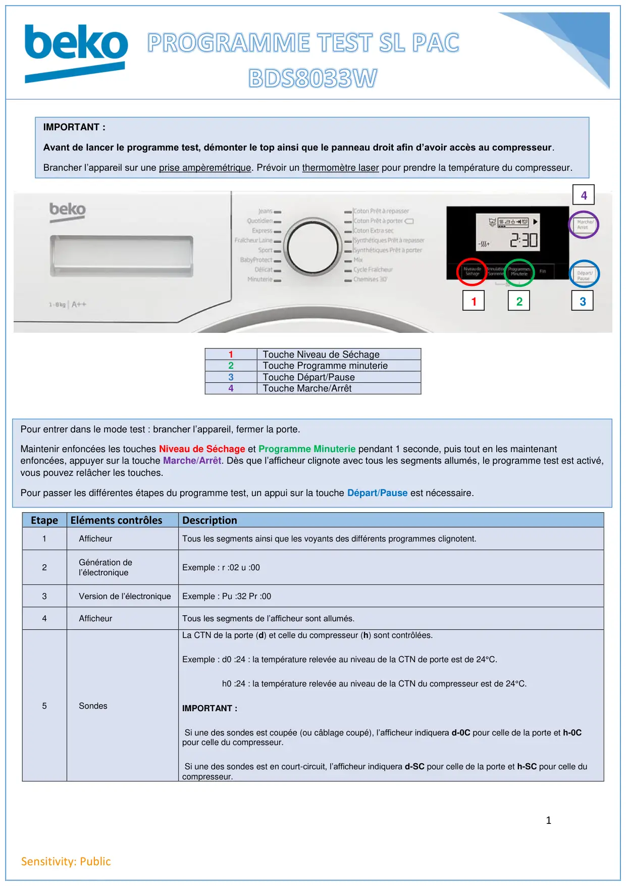
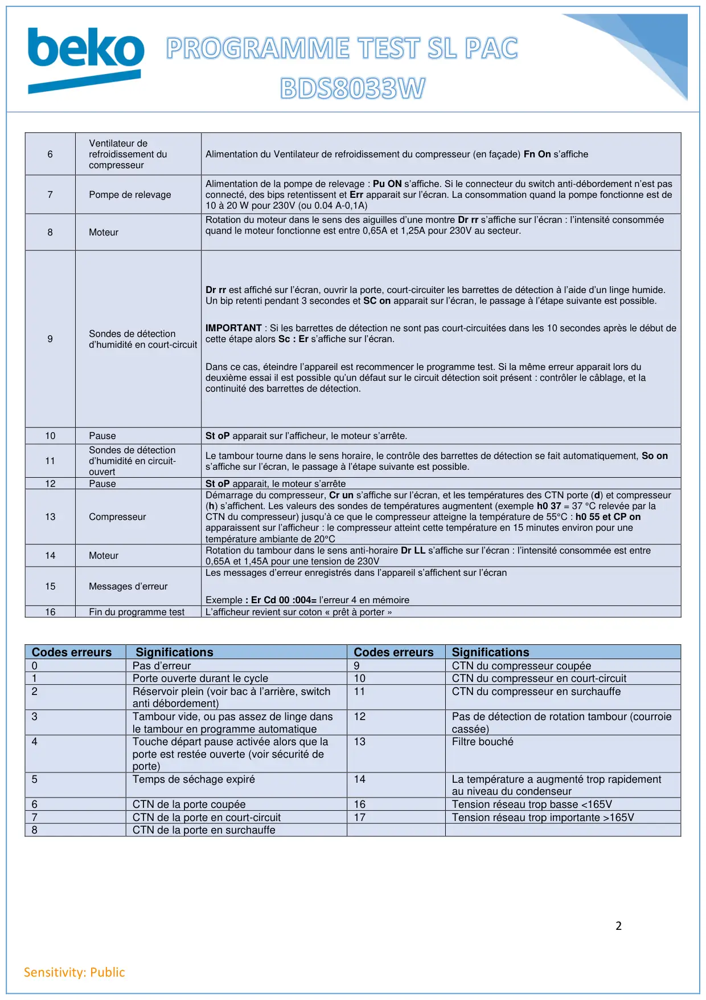

Progr Test seche linge PAC BDS8033W

1Sensitivity: Public1Touche niveau de séchage2Touche programme minuterie3Touche départ/pause4Touche marche/arrêt1Touche Niveau de Séchage2Touche Programme minuterie3Touche Départ/Pause4Touche Marche/ArrêtEtapeEléments contrôlesDescription1AfficheurTous les segments ainsi que les voyants des différents programmes clignotent.2Génération del’électroniqueExemple : r :02 u :003Version de l’électroniqueExemple : Pu :32 Pr :004AfficheurTous les segments de l’afficheur sont allumés.5SondesLa CTN de la porte (d) et celle du compresseur (h) sont contrôlées.Exemple : d0 :24 : la température relevée au niveau de la CTN de porte est de 24°C.h0 :24 : la température relevée au niveau de la CTN du compresseur est de 24°C.IMPORTANT :Si une des sondes est coupée (ou câblage coupé), l’afficheur indiquera d-0C pour celle de la porte et h-0Cpour celle du compresseur.Si une des sondes est en court-circuit, l’afficheur indiquera d-SC pour celle de la porte et h-SC pour celle ducompresseur.IMPORTANT :Avant de lancer le programme test, démonter le top ainsi que le panneau droit afin d’avoir accès au compresseur.Brancher l’appareil sur une prise ampèremétrique. Prévoir un thermomètre laser pour prendre la température du compresseur.1234Pour entrer dans le mode test : brancher l’appareil, fermer la porte.Maintenir enfoncées les touches Niveau de Séchage et Programme Minuterie pendant 1 seconde, puis tout en les maintenantenfoncées, appuyer sur la touche Marche/Arrêt. Dès que l’afficheur clignote avec tous les segments allumés, le programme test est activé,vous pouvez relâcher les touches.Pour passer les différentes étapes du programme test, un appui sur la touche Départ/Pause est nécessaire.
1 / 2
2Sensitivity: PublicCodes erreursSignificationsCodes erreursSignifications0Pas d’erreur9CTN du compresseur coupée1Porte ouverte durant le cycle10CTN du compresseur en court-circuit2Réservoir plein (voir bac à l’arrière, switchanti débordement)11CTN du compresseur en surchauffe3Tambour vide, ou pas assez de linge dansle tambour en programme automatique12Pas de détection de rotation tambour (courroiecassée)4Touche départ pause activée alors que laporte est restée ouverte (voir sécurité deporte)13Filtre bouché5Temps de séchage expiré14La température a augmenté trop rapidementau niveau du condenseur6CTN de la porte coupée16Tension réseau trop basse <165V7CTN de la porte en court-circuit17Tension réseau trop importante >165V8CTN de la porte en surchauffe6Ventilateur derefroidissement ducompresseurAlimentation du Ventilateur de refroidissement du compresseur (en façade) Fn On s’affiche7Pompe de relevageAlimentation de la pompe de relevage : Pu ON s’affiche. Si le connecteur du switch anti-débordement n’est pasconnecté, des bips retentissent et Err apparait sur l’écran. La consommation quand la pompe fonctionne est de10 à 20 W pour 230V (ou 0.04 A-0,1A)8MoteurRotation du moteur dans le sens des aiguilles d’une montre Dr rr s’affiche sur l’écran : l’intensité consomméequand le moteur fonctionne est entre 0,65A et 1,25A pour 230V au secteur.9Sondes de détectiond’humidité en court-circuitDr rr est affiché sur l’écran, ouvrir la porte, court-circuiter les barrettes de détection à l’aide d’un linge humide.Un bip retenti pendant 3 secondes et SC on apparait sur l’écran, le passage à l’étape suivante est possible.IMPORTANT : Si les barrettes de détection ne sont pas court-circuitées dans les 10 secondes après le début decette étape alors Sc : Er s’affiche sur l’écran.Dans ce cas, éteindre l’appareil est recommencer le programme test. Si la même erreur apparait lors dudeuxième essai il est possible qu’un défaut sur le circuit détection soit présent : contrôler le câblage, et lacontinuité des barrettes de détection.10PauseSt oP apparait sur l’afficheur, le moteur s’arrête.11Sondes de détectiond’humidité en circuit-ouvertLe tambour tourne dans le sens horaire, le contrôle des barrettes de détection se fait automatiquement, So ons’affiche sur l’écran, le passage à l’étape suivante est possible.12PauseSt oP apparait, le moteur s’arrête13CompresseurDémarrage du compresseur, Cr un s’affiche sur l’écran, et les températures des CTN porte (d) et compresseur(h) s’affichent. Les valeurs des sondes de températures augmentent (exemple h0 37 = 37 °C relevée par laCTN du compresseur) jusqu’à ce que le compresseur atteigne la température de 55°C : h0 55 et CP onapparaissent sur l’afficheur : le compresseur atteint cette température en 15 minutes environ pour unetempérature ambiante de 20°C14MoteurRotation du tambour dans le sens anti-horaire Dr LL s’affiche sur l’écran : l’intensité consommée est entre0,65A et 1,45A pour une tension de 230V15Messages d’erreurLes messages d’erreur enregistrés dans l’appareil s’affichent sur l’écranExemple : Er Cd 00 :004= l’erreur 4 en mémoire16Fin du programme testL’afficheur revient sur coton « prêt à porter »
2 / 2